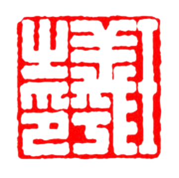
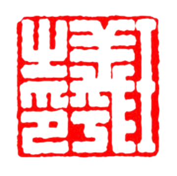
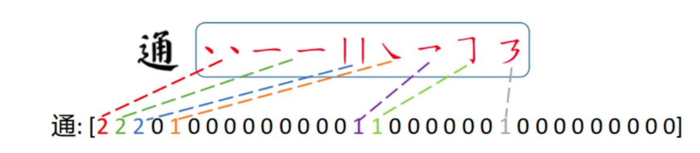

New Font Generation from Classic Calligraphy
An AI generator for Lanting Xu computer font, a piece of well-known Chinese classic calligraphy work from Wang Xizhi.![[no tour image available]](./back-end/lan.png) 

--- What this is about ---
![[no tour image available]](./front-end/lanTingXu.jpeg)
Being well-known around the globe, many Chinese classic calligraphy works are appreciated by people. However, with diverse writing styles of calligraphers, the style of every calligraphy work varies. Moreover, there are only a limited number of characters in each artwork. It is a challenging task to extend their font library.
To complete the task, an AI model is introduced to generate Chinese characters with specific calligraphy style that are not included in the original artwork.
![[no tour image available]](./front-end/diffusion_model.png)
A diffusion model is trained to tackle the task, followed by extra fine-tuning steps. This report dives into the project background, details of methodology, dataset choosing, principles of diffusion model, style and content encoder, stroke encoding, sampling, results processing, the final results, limitations, and some possible improvements to be made.
